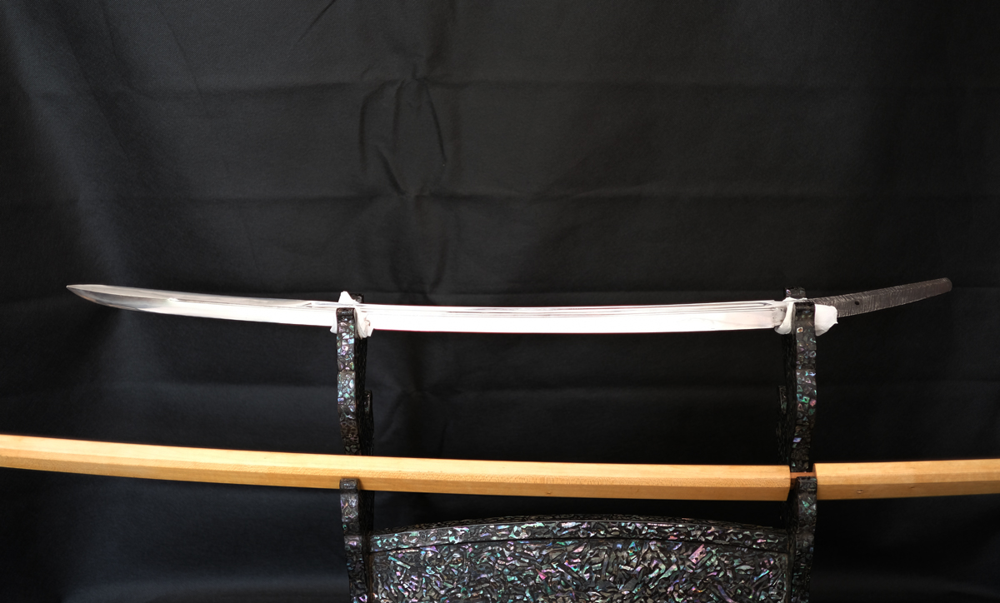

.png)
.png)
The renowned katana sword known as the Kogarasu Maru belonged to the illustrious samurai fighter Minamoto no Yorimitsu during the Heian period (794-1185) in Japan. The name of the sword comes from its unusual appearance, which includes a curving blade that is supposed to resemble a crow's wing.
One of the greatest works of Japanese sword-making, the Kogarasu Maru is renowned for its extraordinary sharpness and beauty. It is said to have been created by renowned swordsman Amakuni in the eighth century and was handed down through several samurai warrior generations.
The name Kogarasu Maru, which translates to "Little Crow," was allegedly given to the sword because of the way its curving blade curves like a crow's wing. The sword's excellent design, which includes elaborate engravings and decorations, is another of its well-known aspects. These elements showcase the craftsmanship and artistry of the Japanese sword-making tradition.
According to history, Minamoto no Yorimitsu, who was renowned for his valour and prowess on the battlefield, engaged in multiple conflicts in which the Kogarasu Maru was an important player. The sword is credited with helping the hero battle a number of supernatural foes, including demons and monsters.
Despite its mythical status and illustrious past, the Kogarasu Maru was lost for numerous decades, and generations were raised without knowing where it was. But in the 20th century, the sword was uncovered in a Japanese private collection and declared a national treasure.
The Kogarasu Maru continues to inspire sword collectors and fans worldwide and is regarded as one of the best works of Japanese sword art today. Its distinctive style and superb craftsmanship are evidence of Japan's rich cultural past, and its background serves as a lesson in the value of preserving our cultural treasures for coming generations.